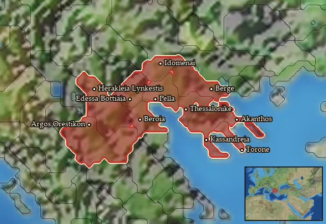

RIS wiki › mercenaries
Macedon
Main campaignRIS Light
← all mercenary pools · wiki index
Mercenary pool: 9 units for hire in 11 regions.

Mercenaries
| Unit | Cost (dn) | Experience | At start | Most in pool | Added per turn | Who can hire | |
|---|---|---|---|---|---|---|---|
| Mercenary Macedonian Hoplites | 3,056 | 0 | 1 | 2 | 0.27–0.5401 | Any faction | |
| Mercenary Thracian Rhomphaiophoroi | 3,503 | 0 | 0 | 1 | 0.1225–0.245 | Any faction | |
| Mercenary Phalangites | 5,627 | 3 | 1 | 2 | 0.1115–0.2229 | Only Achaean League, Antigonid Kingdom, Boeotians, Cyrene, Egyptians, Epirus, Greek City States, Hellenistic Rebels, Lysiad Kingdom, Megalopolis, Pergamon, Pontus, Ptolemaic Empire, Ptolemaic Rebels, Seleucid Empire, Seleucid Rebels (Asia Minor), Seleucid Rebels (Upper Satrapies), Sparta, Taras | |
| Mercenary Agrianian Infantry | 3,176 | 2 | 0 | 2 | 0.1351–0.2702 | Any faction | |
| Mercenary Trallian Infantry | 5,813 | 3 | 0 | 1 | 0.0738–0.1476 | Any faction | |
| Mercenary Thracian Peltasts (Reform) | 3,448 | 2 | 1 | 2 | 0.1819–0.3638 | Any faction | |
| Mercenary Tarantine Cavalry | 4,002 | 1 | 1 | 1 | 0.1072–0.2145 | Any faction | |
| Mercenary Paionian Cavalry | 4,281 | 2 | 0 | 1 | 0.1157–0.2313 | Any faction | |
| Mercenary Thracian Noble Cavalry | 7,623 | 3 | 0 | 1 | 0.065–0.13 | Any faction |
Regions (11)
Akte · Amphaxitis · Bisaltia-Krestonia · Bottiaia · Chalkidike · Emathia · Lynkestis-Eordaia · Mygdonia · Notia Bottiaia · Orestis-Elimeia · Sithonia